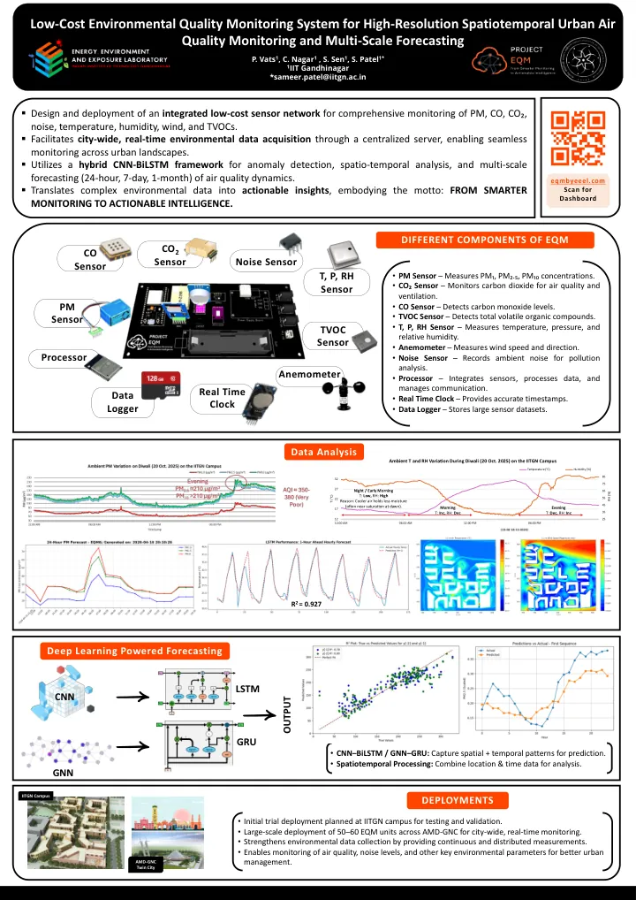
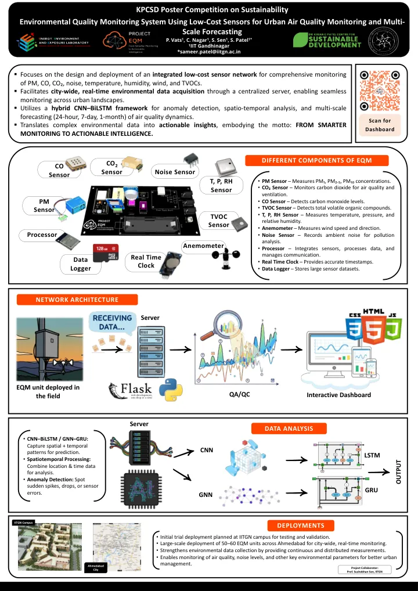
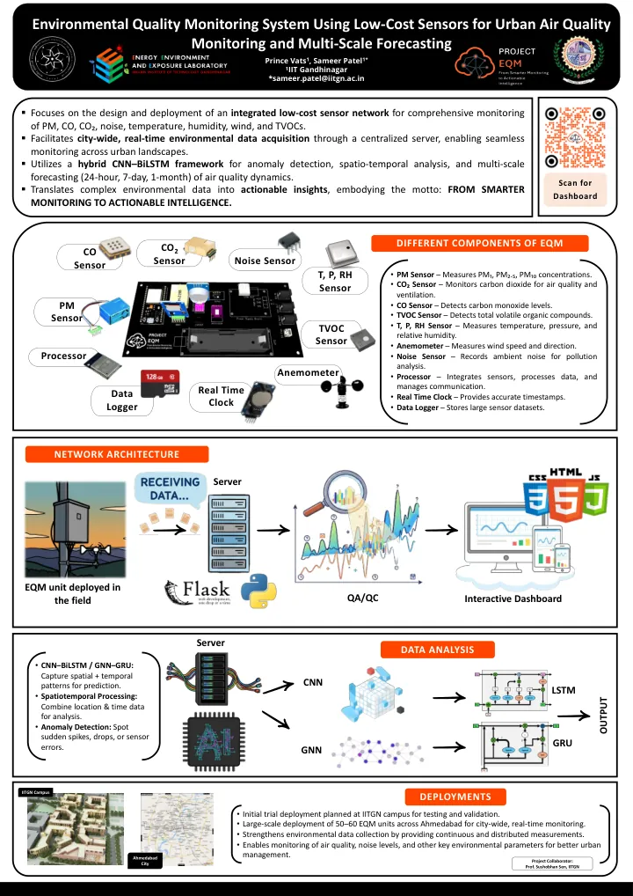
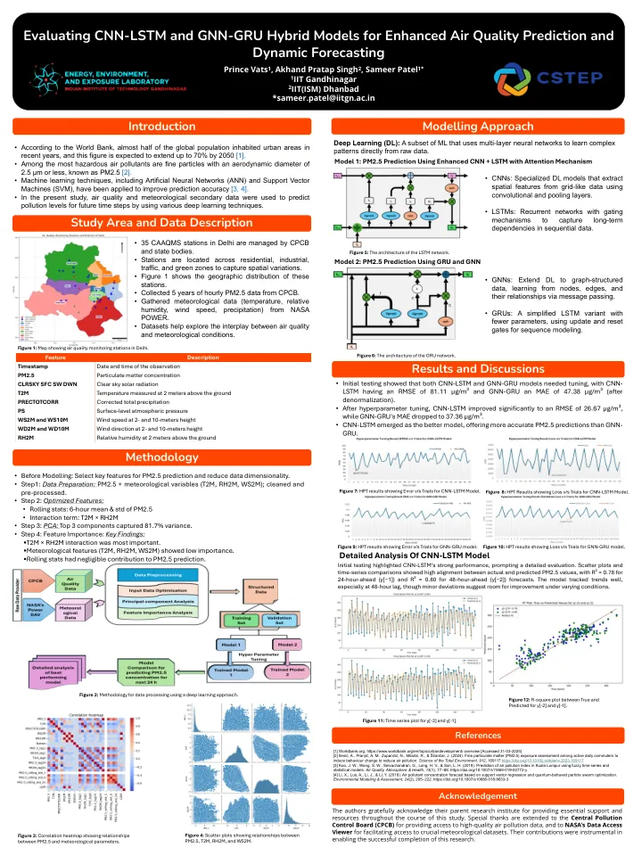
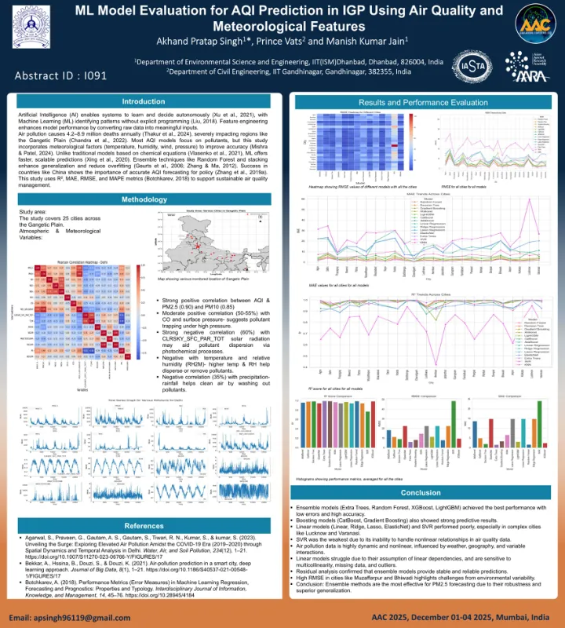
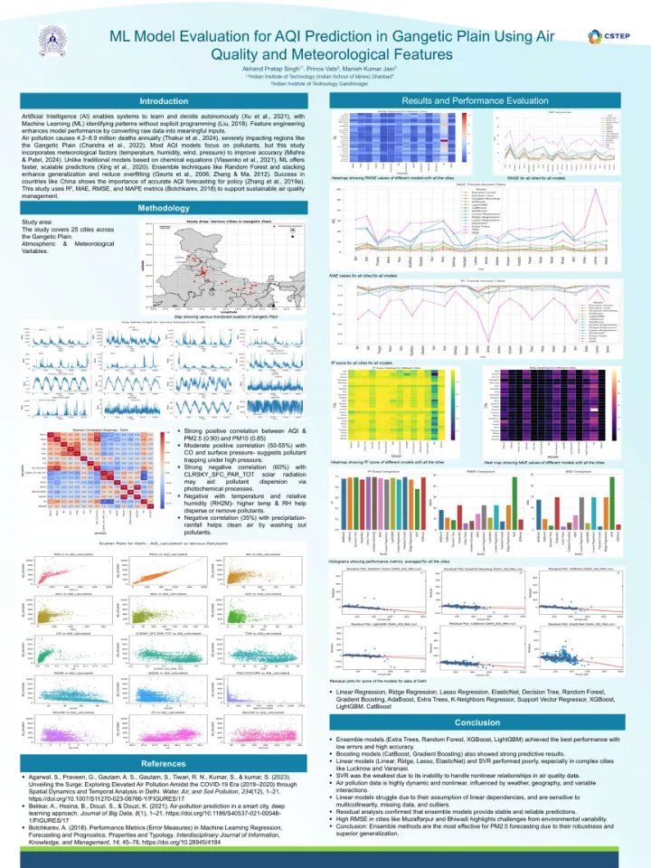

PosterApr 2026
Low-Cost Environmental Quality Monitoring System for High-Resolution Spatiotemporal Urban Air Quality Monitoring and Multi-Scale Forecasting
Prince Vats, C. Nagar, S. Sen, Sameer Patel
Industry Partnership Conclave (IPC 2026), IIT Gandhinagar

PosterApr 2026
Environmental Quality Monitoring System Using Low-Cost Sensors for Urban Air Quality Monitoring and Multi-Scale Forecasting
Prince Vats, C. Nagar, S. Sen, Sameer Patel
KPCSD Poster Competition on Sustainability, IIT Gandhinagar

PosterOct 2025
Environmental Quality Monitoring System Using Low-Cost Sensors for Urban Air Quality Monitoring and Multi-Scale Forecasting
Prince Vats, Sameer Patel
Chemical Engineering Symposium, IIT Gandhinagar & SVNIT

PosterAug 2025
Evaluating CNN-LSTM and GNN-GRU Hybrid Models for Enhanced Air Quality Prediction and Dynamic Forecasting
Prince Vats, A.P. Singh, Sameer Patel
India Clean Air Summit 2025, Bengaluru

PosterCo-authorDec 2025
ML Model Evaluation for AQI Prediction in IGP Using Air Quality and Meteorological Features
A.P. Singh, Prince Vats, M.K. Jain
14th Asian Aerosol Conference (AAC 2025), Mumbai

PosterCo-authorAug 2025
ML Model Evaluation for AQI Prediction in Gangetic Plain Using Air Quality and Meteorological Features
A.P. Singh, Prince Vats, M.K. Jain
India Clean Air Summit 2025, Bengaluru